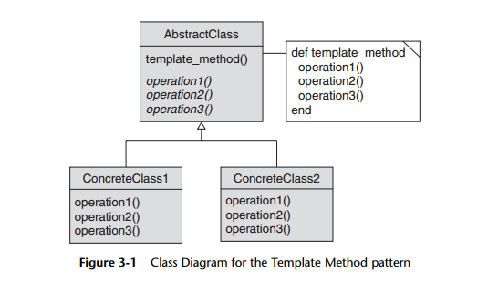

Template Method pattern
The general idea of the Template Method pattern is to
build an abstract base class with a skeletal method. This skeletal method (also called a
template method) drives the bit of the processing that needs to vary, but it does so by
making calls to abstract methods, which are then supplied by the concrete subclasses.

Define an abstract base class with a master
method that performs the basic steps listed above, but that leaves the details of each
step to a subclass. With this approach, we have one subclass for each format.